Proyecto SENA · Ficha 3288046
Universidad ECCI · Centro de Bogotá
Asistí a una conferencia sobre Teoría del Color realizada en la Universidad ECCI, ubicada en el centro de Bogotá. La ponente fue Sara Viloria, colorista certificada por el Pantone Institute, pintora y escritora. Además de la conferencia en el auditorio, en el lobby de la universidad había una exposición de moda y lencería hecha por estudiantes, donde se aplicaba en la práctica todo lo que se explicaba en la charla.
A continuación muestro cada foto que tomé, con una explicación de lo que representa y por qué me pareció importante.
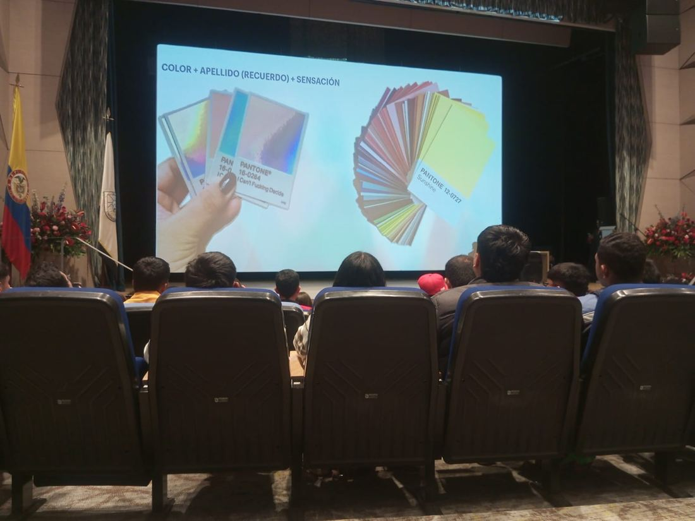
Así empezó la conferencia: una diapositiva de bienvenida a Bogotá, con imágenes de la arquitectura del centro y el arte urbano de la ciudad. Sara explicó que la ciudad misma es una fuente de color y que basta con mirar alrededor para encontrar inspiración cromática.
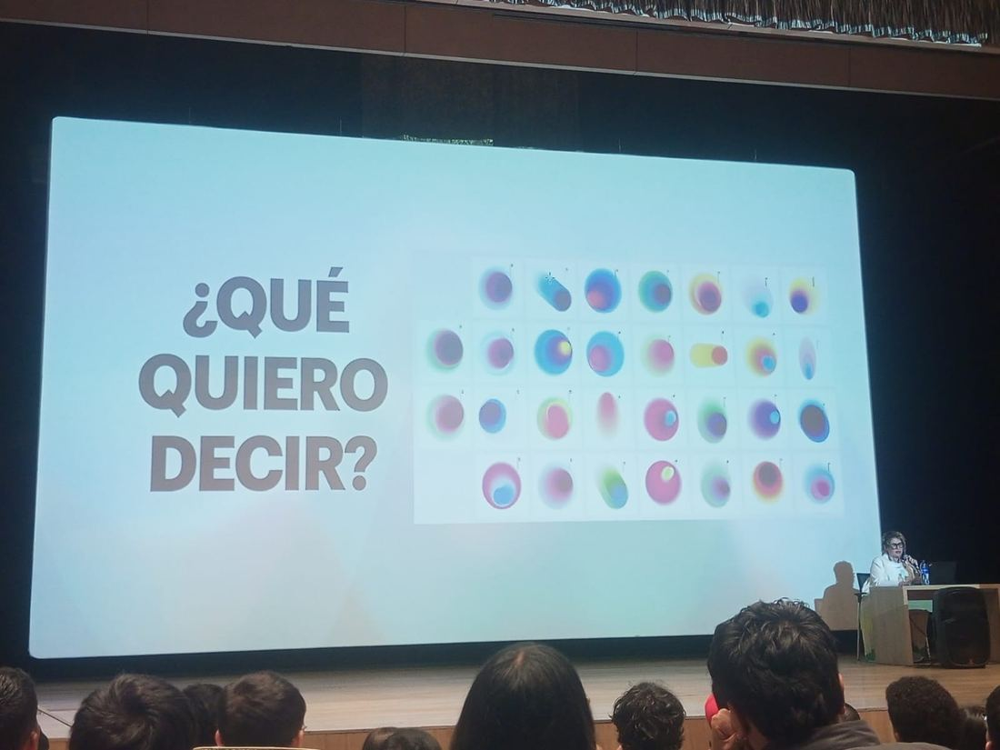
Aquí se mostró la definición de "color" según la RAE y el Oxford Dictionary. Aprendí que el color es una sensación producida por la luz al impresionar nuestros ojos, y que depende directamente de la longitud de onda. Es decir, el color no existe sin un ojo que lo perciba.
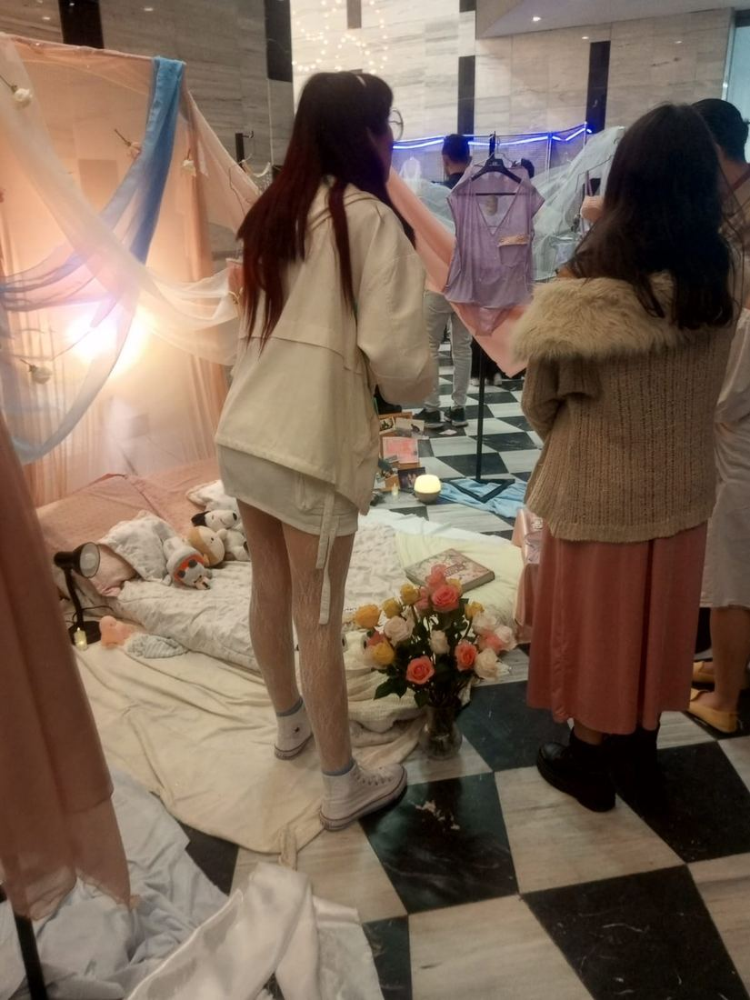
Esta parte me sorprendió mucho: Sara explicó el origen filosófico del círculo cromático. Habló de Filolao, un filósofo pitagórico, y de cómo su idea fue retomada por Copérnico y luego por Newton para desarrollar tanto la teoría del color como la teoría de la gravedad. Todo está conectado.
En esta diapositiva se mostraron varias manchas de color sin ninguna forma definida. La idea era demostrar que, incluso sin figuras ni objetos, el color ya transmite una emoción por sí solo. Antes de elegir un color para un diseño, hay que preguntarse qué se quiere transmitir.
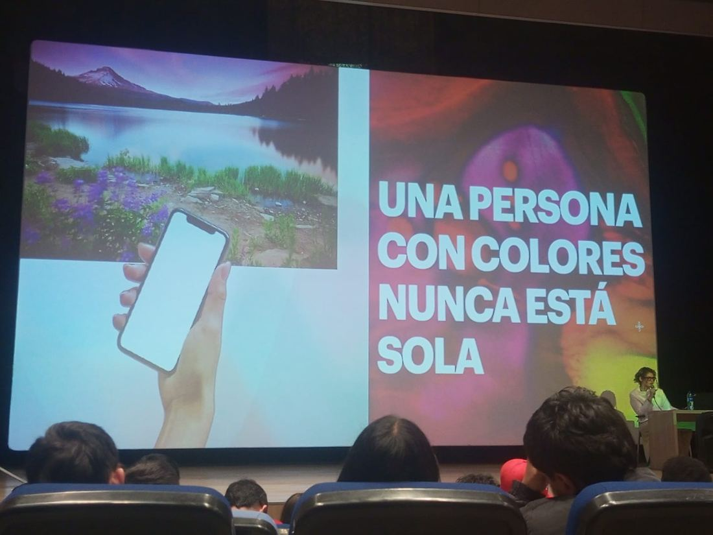
Esta fue, para mí, la frase más importante de toda la conferencia. Sara explicó que cuando aprendemos a ver y usar el color de manera consciente, siempre tenemos una herramienta de expresión a la mano, sin importar la situación. Me quedé pensando en esa frase todo el resto del día.
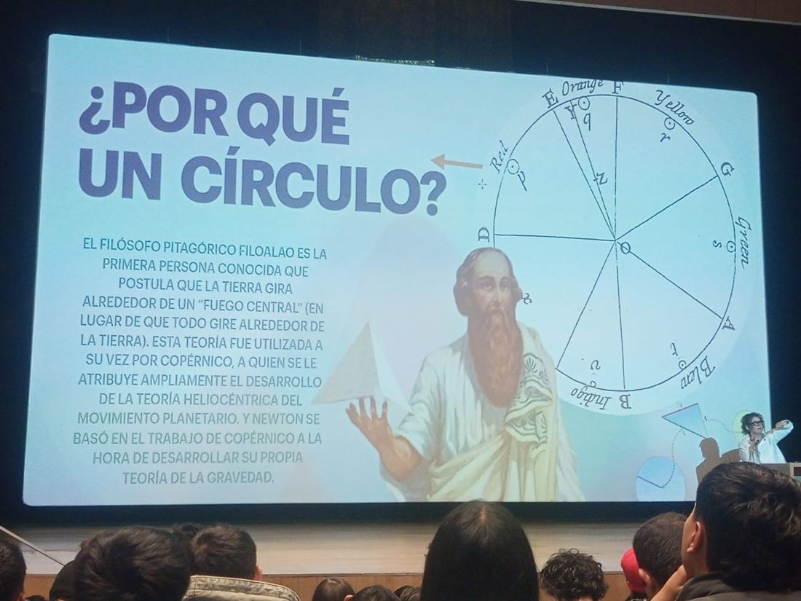
Aquí se mostraron ejemplos de cómo el color se aplica en piezas de arte, textiles y diseño de moda. Sara citó a Paul Klee, quien dijo que "el color es el lugar donde nuestro cerebro y el universo se encuentran". Me ayudó a entender que el color conecta lo técnico con lo emocional.
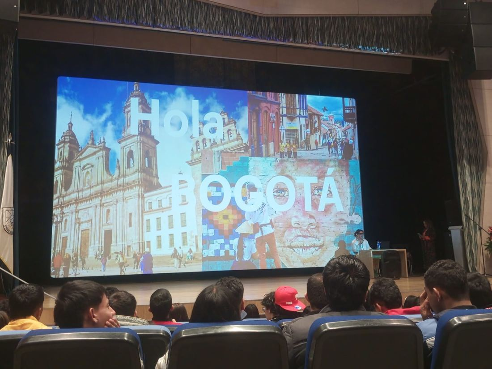
En esta parte se explicó cómo funciona el sistema Pantone: cada color tiene un código, pero también un nombre y una historia. Sara mostró ejemplos curiosos de nombres de colores Pantone y explicó que detrás de cada tono hay una intención de comunicación, no solo un número.
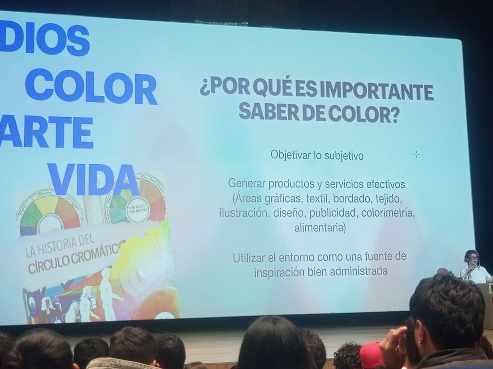
Esta diapositiva resumió por qué el conocimiento del color es útil en muchas áreas: diseño gráfico, moda, publicidad, ilustración, textil e incluso la industria alimentaria. La idea central fue "objetivar lo subjetivo": usar el color de forma intencional y no solo por gusto personal.
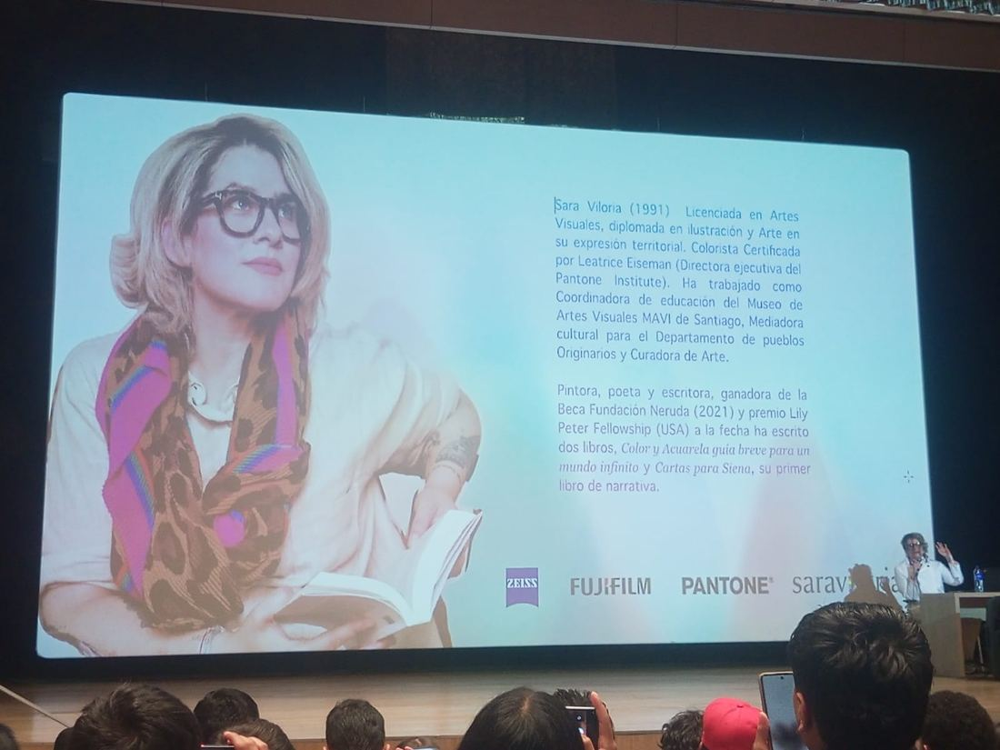
Para cerrar esta parte, Sara explicó que cada color que vemos está conectado con un recuerdo personal y una sensación específica. Por eso dos personas pueden percibir el mismo color de forma completamente distinta. El color, al final, también es algo muy personal.
Al salir del auditorio, en el lobby de la ECCI había una exposición hecha por estudiantes de diseño, donde cada stand representaba una paleta de color distinta. Ver la teoría aplicada de esta forma fue una de las partes que más disfruté.
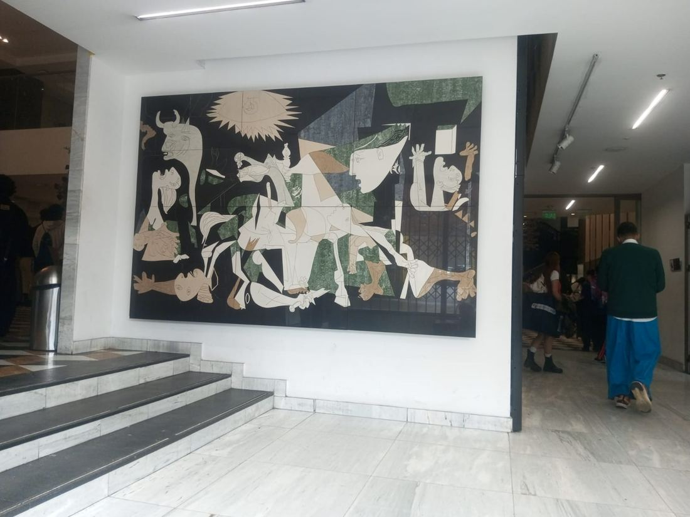
Esta es la vista general del lobby de la ECCI, lleno de estudiantes recorriendo los diferentes stands. Cada uno tenía una temática de color distinta, y se notaba el trabajo que había detrás de cada montaje.
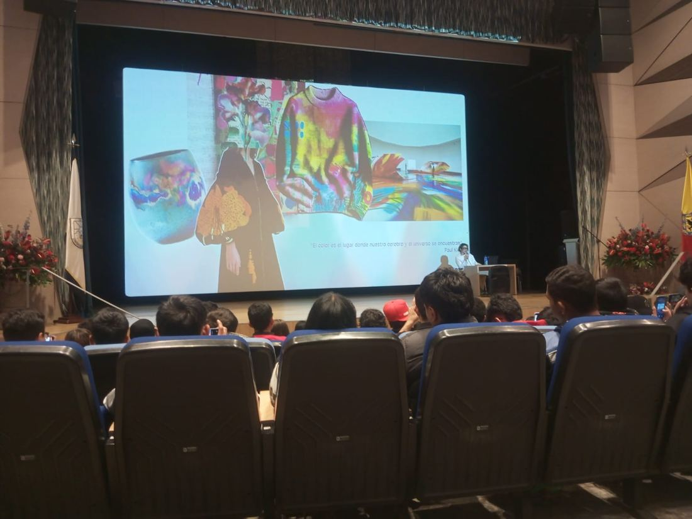
Una mesa completamente cubierta de CDs que reflejaban todos los colores del espectro de luz. Me recordó directamente a lo que se explicó en la conferencia sobre cómo la luz blanca se descompone en colores. La teoría hecha decoración.
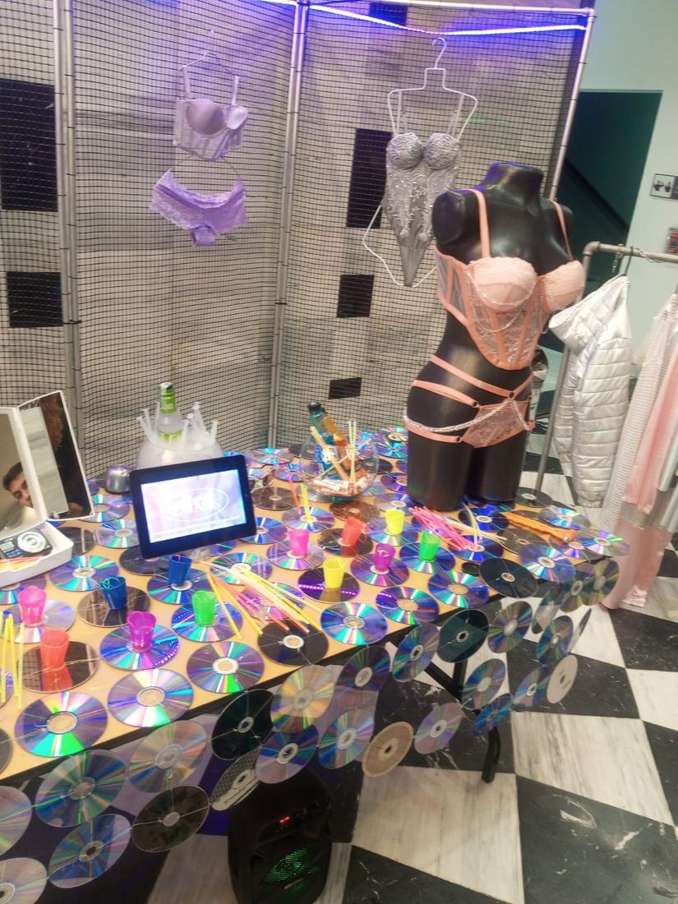
Aquí se ve el stand completo, con maniquíes que mostraban lencería en tonos lila y plateado. La combinación de los CDs reflectantes con estos colores fríos generaba un ambiente futurista y llamativo.
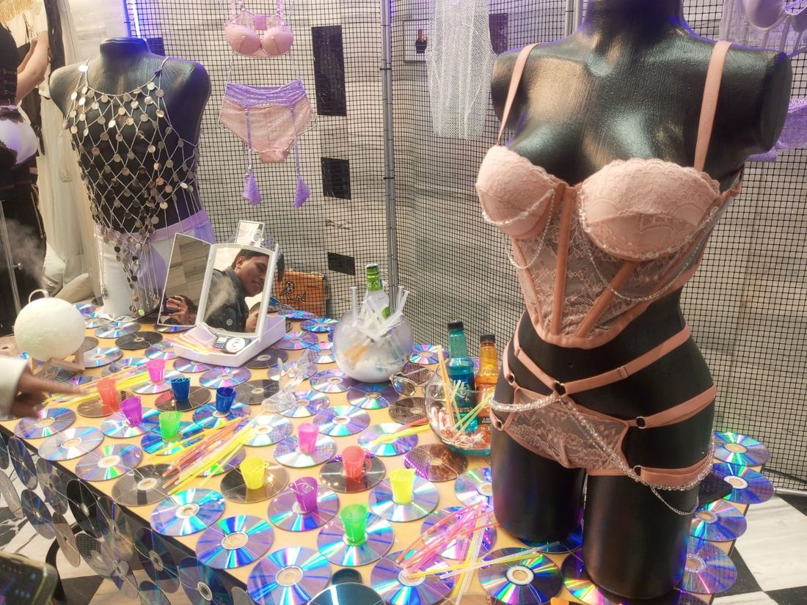
Este stand usaba una paleta de azules, celestes y plateados, con telas que simulaban olas y conchas. Era un ejemplo claro de una paleta de colores análogos: todos los tonos se relacionaban entre sí y generaban una sensación de calma.
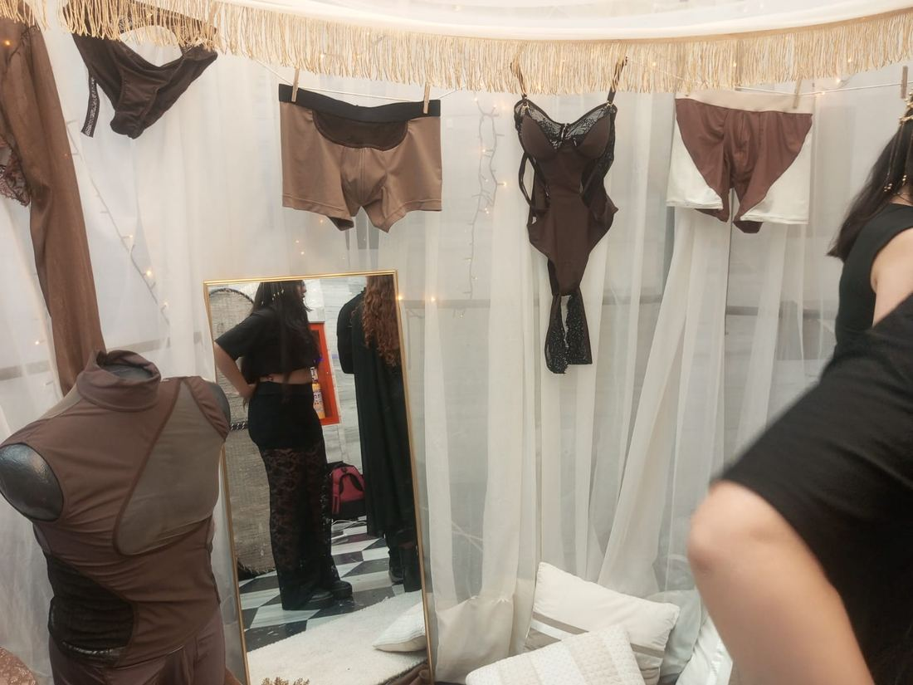
Un stand con prendas en tonos marrón, nude y negro. A diferencia del stand del mar, esta paleta transmitía calidez y elegancia. Fue interesante ver cómo un cambio de paleta cambia completamente la sensación del espacio, aunque la idea de fondo sea la misma: mostrar lencería.
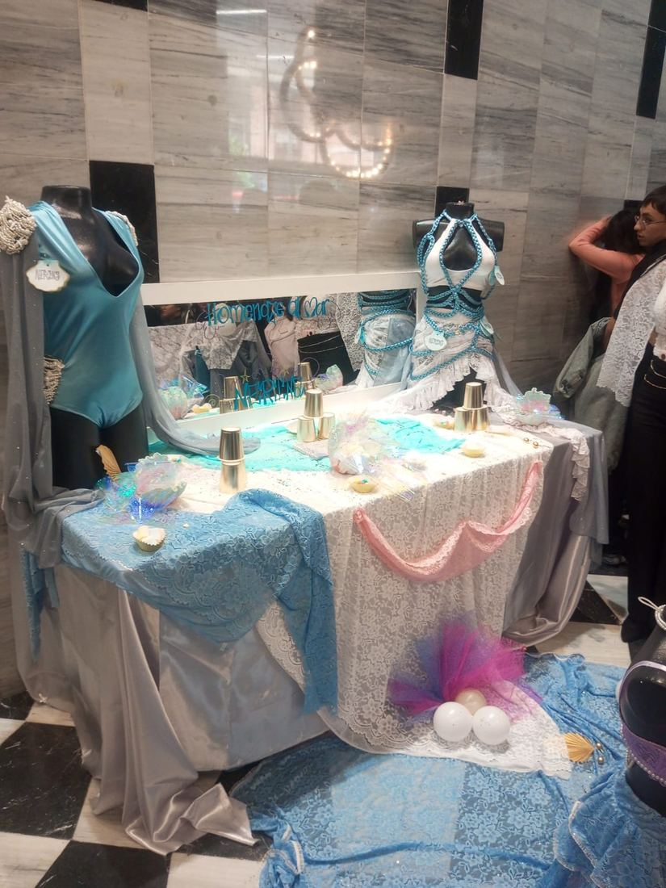
Este stand recreaba una habitación con tonos pastel rosado, azul y blanco, decorada con peluches y flores. La paleta pastel se asocia normalmente con ternura y nostalgia, y aquí se usó exactamente para eso: crear un ambiente tranquilo y romántico.
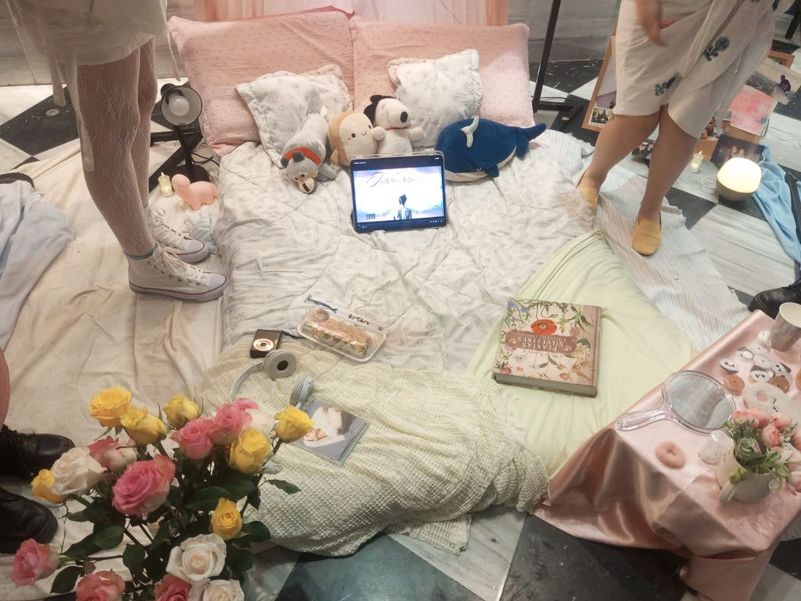
Un acercamiento al mismo stand, donde se ven flores, libros y objetos decorativos en tonos suaves. Cada elemento reforzaba la misma paleta de color, lo que demuestra que la coherencia cromática también se logra con objetos pequeños, no solo con la ropa.
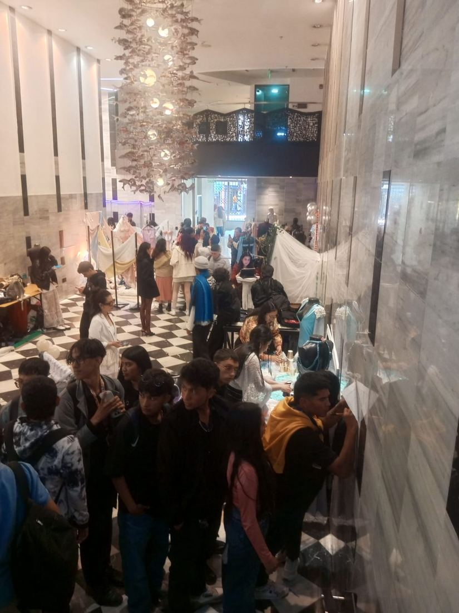
En este rack, la ropa estaba organizada siguiendo una transición de colores: del rosa palo al azul cielo. Esta forma de exhibir la ropa también es una aplicación directa de la teoría del color, mostrando cómo se pueden combinar tonos similares de manera armónica.
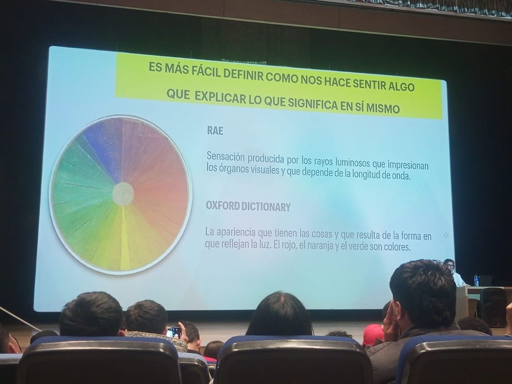
Esta es una foto que me tomé en el lobby de la universidad, en medio de todo el ambiente de la exposición. Fue un buen cierre para una jornada en la que aprendí mucho más de lo que esperaba sobre algo tan cotidiano como el color.
Esta conferencia me ayudó a entender que el color no es solo un detalle estético, sino una herramienta de comunicación con base científica, histórica y emocional. Ver la teoría aplicada en la exposición de moda me permitió comprenderla de una forma mucho más práctica. Fue una experiencia que recomendaría a cualquier compañero del SENA interesado en diseño, moda o comunicación visual.